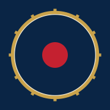
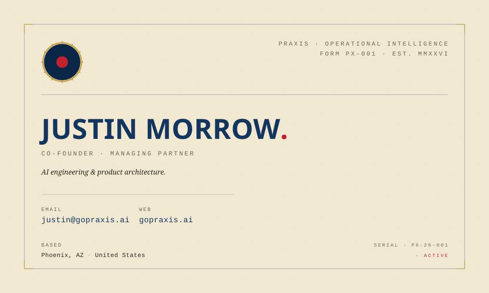
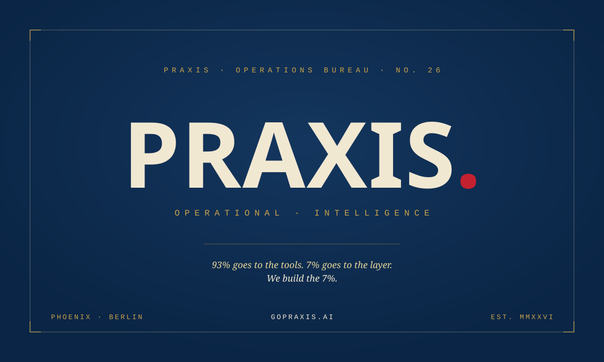
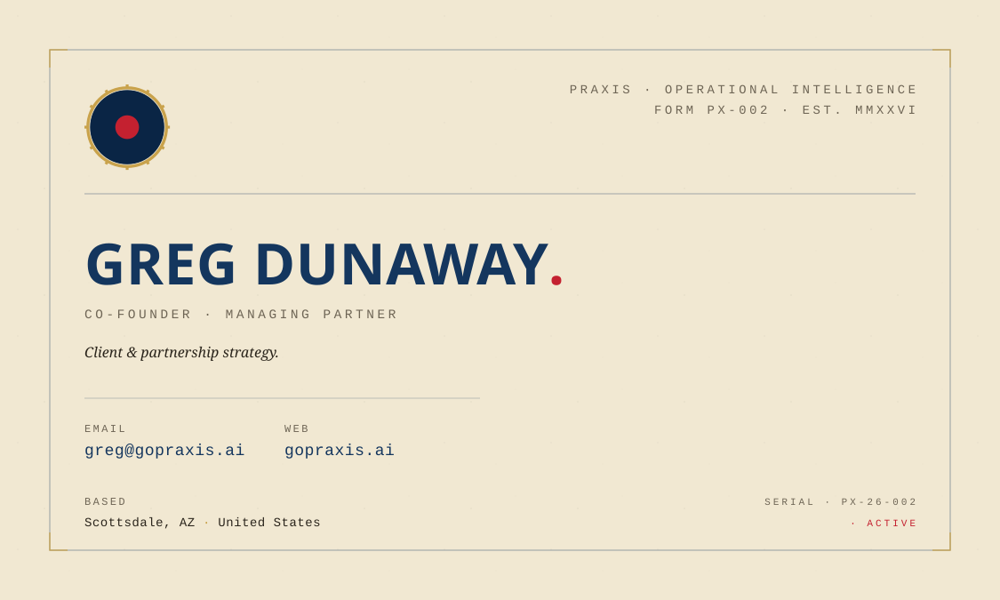

Every Praxis touchpoint outside the homepage runs through one of three artifacts: the favicon a browser tab loads, the email signature you and Greg send a hundred times a week, the business card you hand to an operator at a conference. All three are now finalized in the V4 register and ready to deploy. None of them require praxis-web changes; all of them put V4 in front of a buyer the moment they exist.

Replace the existing favicon link tags in app/layout.tsx (or your head component) with these:
<link rel="icon" href="/favicon.svg" type="image/svg+xml" />
<link rel="apple-touch-icon" href="/apple-touch-icon.svg" />
The full badge has 12 cog teeth that turn to mush below 32px. The simplified variant drops the teeth and thickens the gold ring so the mark stays legible in a browser tab. Modern browsers will pick the right one automatically when both are linked.
Some legacy environments still want a favicon.ico file. Convert favicon-simplified.svg to a 16×16 / 32×32 multi-resolution ICO via realfavicongenerator.net or similar. SVG is the canonical source, ICO is generated.
|
Justin Morrow.
Co-Founder · Managing Partner
Operators who build software for other operators. Six engagements per year. Both partners on every one.
|
|
Greg Dunaway.
Co-Founder · Managing Partner
Operators who build software for other operators. Six engagements per year. Both partners on every one.
|
.html signature file in a browserOpen the HTML in a browser, select all, copy, paste into the signature field. Apple Mail and Outlook both preserve the inline styles. The badge is inline SVG so no image hosting required and it survives forwarding.
Email clients strip @import. Arial Black approximates Big Shoulders for the name. Courier New approximates Plex Mono for chrome. Georgia italic carries the Special Elite warmth. Close enough; preserves the system in a hostile environment.



3.5 in × 2 in (1050×600 px @ 300dpi)0.125 in on all sides (full SVG = 1125×675)0.125 in inside the trim lineMOO for premium feel (Luxe stock 32pt with painted edge in navy or red). Vistaprint for fast turnaround. Jukebox for letterpress on cotton paper if you want the operator's-manual feel to be physical, not just visual. Recommend MOO Luxe for a first reorder.
Open the SVG in Affinity Designer or Illustrator, set color profile to CMYK, export as PDF/X-1a with bleed. Most online vendors accept PDF/X-1a directly. Spot color for the red (Pantone 199 C is closest) only if doing letterpress.
Favicon swaps in the praxis-web public folder, single PR. Email signatures install in five minutes per Gmail account. Business cards send to MOO for a first reorder; new cards ship in 4 to 7 business days. By the end of the week every Praxis touchpoint outside the homepage speaks the V4 register, with zero touch on praxis-web layout code.
Praxis brand work now starts from the live V4 system: Big Shoulders, IBM Plex Sans, IBM Plex Mono, navy, gold, paper, and red live-signal punctuation. The retired legacy system is blocked in the local Praxis design skill.
{kind=link}
{kind=link}
{kind=link}
{kind=link}
{kind=link}
{kind=link}
{kind=link}